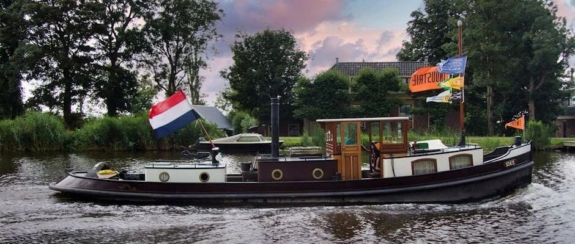

十年不买菜，提前退休环游50国！
点击关注 秋秋在分享
一起实现财务自由退休
大家好，我是秋秋呀。
今天是一期「提前退休FIRE族案例分享」。这个专题想给大家增强信心，一起分析下成功案例的经验。
曾婉玲，一个从中国台湾到全球旅居的女生。
最初月薪只有6800，十年极简后存下了650万，于33岁两人一起带着2岁的儿子环游世界去了！

她的FIRE存钱心得：
曾婉玲计算，自己的家庭年开支约26万人民币，反推需要650万本金（26万÷4%），以此为目标开始了存钱计划。
1、提高收入
她最初工资3万台币（约6800元人民币），从事英语教师。后面转行至科技公司业务员，进入戴尔（Dell）任产品经理，月薪到9万台币（约2万元人民币）。
她的丈夫Jeremy，也通过加班、提升技能获得稳定加薪。
两人还运营旅行博客，通过广告分成补充收入。
一下子收入提高了三倍以上。
2、投资复利
在2012年退休时，曾婉玲的资产年化收益率约10%，足够被动收入覆盖生活开支。
她的投资心得是：
70%指数基金与分红股：
如标普500ETF，长期持有并利用复利效应；
15%不动产投资信托（REITs）：
获取稳定租金收益；
15%债券：
平衡风险，保障现金流。
这方面我也参考了她，从2019年就开始定投美股指数，确实收益率很不错。
3、生活极简
她选择了“瘦FIRE”模式，生活上极致节俭压缩支出，70%的收入都存下。
1）住房和交通
用租房替代买房，省去了房贷、物业费及装修的开支。
你要问为什么不买房，答案是愿望想全球旅居，没有想一开始过稳定的生活，房子不是人生必须项。

他们长租廉价学生公寓，租金仅为当地市场价的1/3，省下一大笔钱。
也不买车，全程以自行车+公共交通出行。
这样算，光10年间的交通费，就省下十几万。
很多人会觉得这样生活一点都不幸福啊！
其实当你爱上运动，骑车走路也不会觉得很辛苦，不开车还能替代健身房开销，锻炼身体。
我俩从北京来威海就是骑自行车过来的，确实很不一样的体验。
当然如果你不想这么极端，也可以只从自己不在意的部分省钱。
2）饮食与衣物：
也是我很震惊的！她们自己种菜吃。
在租住地开辟了一个小菜园，种植番茄、青菜等易活的农作物，还把多的蔬菜与邻居交换鸡蛋，实现食物零成本循环。
他们几乎不下餐馆，月饮食开销控制在收入的5%以内，也就是月薪1万只花500块钱吃饭。
这点也因人而异，像我比较爱吃，宁愿多打份工也得吃好睡好。
衣物大多来自二手市场，家具家电来自二手平台，丈夫一件毛衣穿7年，家里共用一部手机…….
拒绝婚礼钻戒、婚纱照，蜜月徒步爬山仅花百元。
要不人家能存下钱，光存钱的这份决心、这个行动力就很厉害了。

3）收入与储蓄
前面说过她们能把70%以上收入转化为“金鹅”，是在工资到账后立即就存好70%。
采用“收入-储蓄=支出”模型，把剩余30%再分配生活开销。
他们会用“生命标签”法来消费。
将消费换算为生命时间成本。
例如：1杯星巴克=工作1小时（按时薪10元计算），一件新衣=2天生命价值。这样购物前就会强制思考“是否值得用生命时间交换”？
他们还会强制记账与复盘。
月底按“衣食住行育乐”分类分析，砍掉高频低效支出（如外卖、会员订阅），不咋冲动购物。
也不用信用消费，避免“先享受后付款”的债务循环。
在薪资翻3倍后，一个月收入大几万，也能仍维持原消费水平，将收入70%投入投资。
还利用“72法则”（72÷年化收益率=本金翻倍年数），以10%回报率，7.2年实现资产翻倍。
很多人会觉得这么节俭，日子还有啥意思！
其实我理解曾婉玲「用短期克制换长期自由」的心态。
她的节俭并非单纯“省钱吃亏”，也不是压抑欲望，是非常快乐的去做自己想做的事。
比如你想登顶珠穆朗玛峰，想去月球探险，那在饮食上欲望上的克制是很辛苦的，你却觉得很有意义。
时间自由、环游世界就是她的终极目标。

她用10年忍耐换来了：
1、被动收入覆盖生活：
650万本金年化收益4%，支撑了50+国深度旅行。
2、低成本的环球体验：
按自然周期规划旅行主题，如雨季挖菌、冬季石窟考察，生活很有仪式感。
3、精神丰盛替代物质：
他们会用信用卡积分兑换免费机票、选择低物价国家长居，持续“环游世界不破产”。
“真正的财富，是拥有选择不工作的权利，更是拥有不被金钱束缚的自由意志。”
这点值得鼓掌！